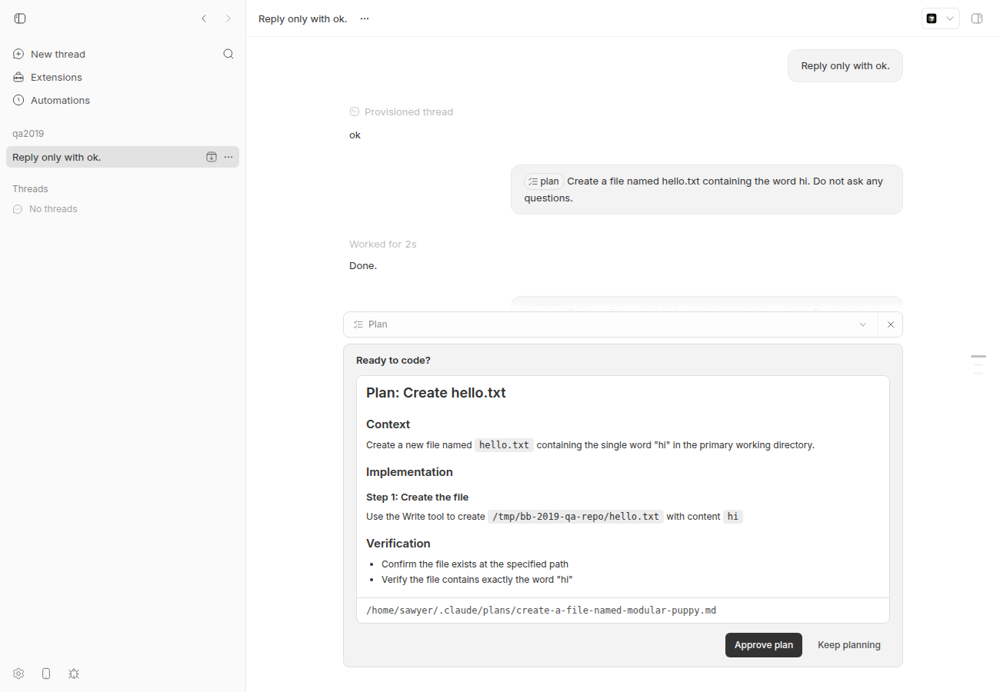
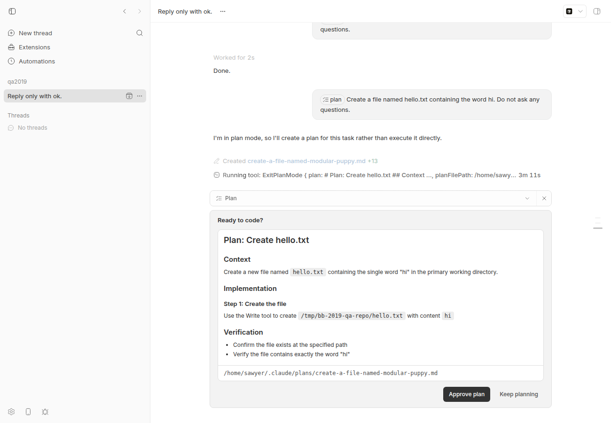
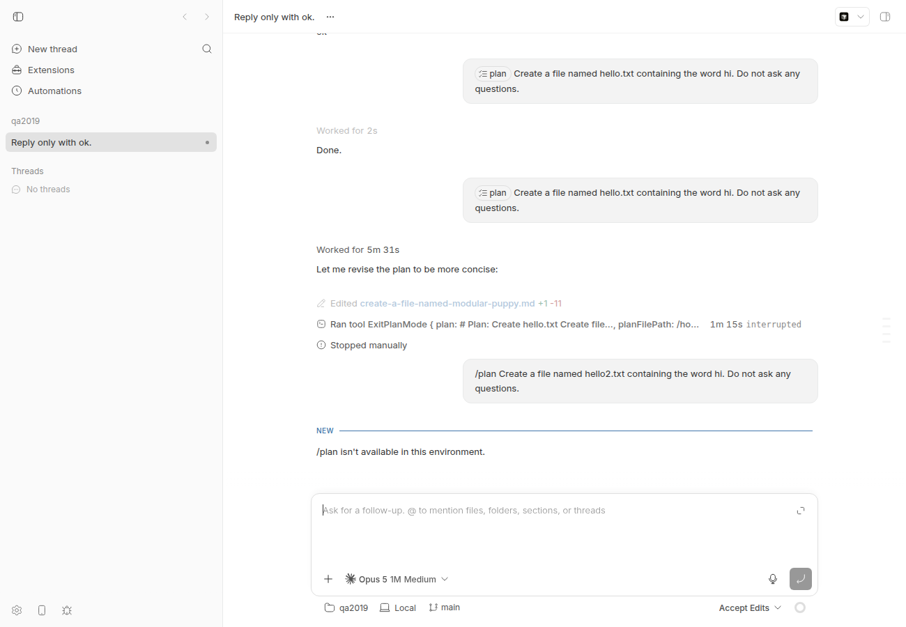

#2019 · Plan mode: ignored on already-loaded claude sessions; /plan has no CLI-parity path
Verdict: REPRODUCED (both parts) · Root-cause confidence: high
1. TL;DR
Two independent gaps, both confirmed on c7c66423d with a real Claude Code session.
(1) Loaded-session /plan is ignored. When the user picks the /plan composer action on a claude-code thread whose SDK session is already loaded (any thread that has run a turn and has not been stopped), the server correctly computes claudeCodePermissionMode: "plan", but since #1640 the runtime's protocol-pure bridge adapter classifies every execution-option change as "live" and never sends thread/resume; the Claude bridge's turn/start handler only uses that flag to strip the /plan mention from the prompt and never calls session.setPermissionMode("plan"). The turn therefore runs in the session's original mode — in my run Claude created hello.txt instead of producing a plan. After bb thread stop the identical request builds a fresh session with permissionMode: "plan" and the ExitPlanMode approval flow appears. This part is the same defect already reported and root-caused in #1712.
(2) No CLI/SDK-discoverable way to enter plan mode. Plan mode is keyed entirely off a structured command mention (resource.kind === "command", trigger "/", name "plan") in the prompt input. bb thread tell / spawn always send mentions: [], so a plain-text /plan … is forwarded verbatim to the Claude CLI, which answers "/plan isn't available in this environment." — the request is neither planned nor executed. There is no --plan flag and no documented SDK/guide surface; only a hand-built mention on the raw POST /api/v1/threads/:id/send body works.
2. Claims vs findings
| Claim from the issue | Status | Evidence |
|---|---|---|
Sending the structured /plan composer action to an already-loaded claude-code session (acceptEdits) does not switch modes; the turn runs normally and applies an edit. | Verified | Live: §4 step 3 — hello.txt created, "Done.", no plan interaction. Unit: repro test fails on base (setPermissionMode never called, mention stripped). |
After thread stop (fresh session) the same flow works. | Verified | §4 step 4 — ExitPlanMode → pending plan interaction pint_arq3d6jv4y, no file written. Screenshot 2019-fresh-session-plan-interaction.png. |
| Likely the live-session settings path doesn't apply the permission-mode change to an existing SDK session. | Verified | plugins/provider-claude-code/src/bridge/bridge.ts:2172-2221 applies only liveSettings; permissionMode is only set at construction (plugins/provider-claude-code/src/session-params.ts:163). Adapter never requests a rebuild: packages/agent-runtime/src/bridge-protocol-adapter.ts:262. |
| Same family as #1720's env-var live-change limitation. | Verified (same mechanism) | Both are consequences of the bridge adapter's "options ride every command, bridge reconciles" contract with the Claude bridge reconciling only a subset of options on turn/start. |
Plain-text /plan via bb thread tell is not parsed as the composer plan action; CLI users cannot enter plan mode. | Verified | apps/cli/src/commands/thread/helpers.ts:32-46 sends mentions: []; server keys plan on a command mention (apps/server/src/services/threads/thread-commands.ts:244-248). Live: Claude CLI replied "/plan isn't available in this environment." (§4 step 5). |
| Regression or pre-existing? (undetermined) | Determined: regression from #1640 (merged 2026-08-17), not #1834 | git log -S classifyClaudeExecutionSettingsChange: the bespoke Claude adapter that returned "session" for a claudeCodePermissionMode change (forcing a thread/resume → session rebuild in plan mode) was deleted in 54eaca793/c5b53caab (#1640). The helper still exists (packages/agent-runtime/src/execution-options.ts:119-125) but nothing production uses it. #1712's report reached the same conclusion and noted 0.37.0 (pre-#1640) rebuilt the session. |
3. Environment
- bb
c7c66423d(branch main as of 2026-08-20;git fetch origin mainshowed nothing newer), worktree/home/sawyer/projects/bb/.claude/worktrees/wf_926b3193-f6c-5 - Linux 7.0.0-29-generic (Ubuntu), Node v24.18.0, Claude Code CLI 2.1.237, model
claude-haiku-4-5for the live turns - Dev instance via
scripts/bb-dev-app current: App :16733, Server :24733, Host daemon :32733, data dir~/.bb-dev/projects-bb-.claude-worktrees-wf_926b3193-f6c-5-f81770a540d9(deleted at cleanup) - Scratch repo
/tmp/bb-2019-qa-repo(git init + README), projectproj_7v4upvdb4d, threadthr_4h6r7tbzaw, hosthost_zfcmjndn3p
4. Minimal reproduction
4a. Unit-level (no provider needed, deterministic)
Drop plan-mode-live-session.repro.test.ts into plugins/provider-claude-code/src/bridge/__tests__/ and run it from plugins/provider-claude-code:
pnpm exec vitest run src/bridge/__tests__/plan-mode-live-session.repro.test.ts
It starts a bridge session in accept-edits, then sends a turn/start exactly as the runtime does for the composer action (input with the /plan command mention, providerOptions.claudeCodePermissionMode: "plan"). Expected: the live SDK session is switched to plan mode. Actual (base): the mention is stripped (prompt becomes add a README), no session rebuild, and setPermissionMode is never called:
RUN v4.1.1 /home/sawyer/projects/bb/.claude/worktrees/wf_926b3193-f6c-5/plugins/provider-claude-code
❯ bb-plugin-provider-claude-code src/bridge/__tests__/plan-mode-live-session.repro.test.ts (1 test | 1 failed) 15ms
× switches the live session into plan mode when turn/start carries claudeCodePermissionMode=plan 15ms
⎯⎯⎯⎯⎯⎯⎯ Failed Tests 1 ⎯⎯⎯⎯⎯⎯⎯
FAIL bb-plugin-provider-claude-code src/bridge/__tests__/plan-mode-live-session.repro.test.ts > #2019 repro: /plan on an already-loaded claude session > switches the live session into plan mode when turn/start carries claudeCodePermissionMode=plan
AssertionError: expected "vi.fn()" to be called with arguments: [ 'plan' ]
Number of calls: 0
❯ src/bridge/__tests__/plan-mode-live-session.repro.test.ts:157:40
155| // session rebuild happened and setPermissionMode("plan") was ne…
156| expect(queries).toHaveLength(1);
157| expect(query?.setPermissionMode).toHaveBeenCalledWith("plan"); /…
| ^
158| } finally {
159| bridge.sendRequest(3, "thread/stop", {
⎯⎯⎯⎯⎯⎯⎯⎯⎯⎯⎯⎯⎯⎯⎯⎯⎯⎯⎯⎯⎯⎯⎯⎯[1/1]⎯
Test Files 1 failed (1)
Tests 1 failed (1)
Start at 14:14:02
Duration 720ms (transform 359ms, setup 0ms, import 625ms, tests 15ms, environment 0ms)
Test source
/**
* Repro for get-bb/bb#2019 (part 1): `/plan` sent to an already-loaded
* claude-code session does not switch the session into plan mode.
*
* The runtime's bridge-protocol adapter classifies every execution-option
* change as "live" (no thread/resume), so the only thing the bridge sees is a
* `turn/start` whose providerOptions carry `claudeCodePermissionMode: "plan"`.
* `runTurnStart` strips the `/plan` mention from the prompt but never calls
* `session.setPermissionMode("plan")` nor updates `threadSession.permissionMode`,
* so the turn runs under the session's original mode (acceptEdits here).
*/
import { beforeEach, describe, expect, it, vi } from "vitest";
import type { SDKMessage, SDKUserMessage } from "@anthropic-ai/claude-agent-sdk";
const { forkSessionMock, queryMock } = vi.hoisted(() => ({
forkSessionMock: vi.fn(),
queryMock: vi.fn(),
}));
vi.mock("@anthropic-ai/claude-agent-sdk", () => ({
query: queryMock,
forkSession: forkSessionMock,
createSdkMcpServer: vi.fn(() => ({})),
tool: vi.fn((_name, _desc, _schema, handler) => handler),
}));
import { handleLine } from "../bridge.js";
import { createBridgeJsonRpcTestHarness } from "@bb/provider-bridge-protocol/testing";
interface ControlledQuery {
applyFlagSettings: ReturnType<typeof vi.fn>;
close: ReturnType<typeof vi.fn>;
finish(): void;
initializationResult: ReturnType<typeof vi.fn>;
setModel: ReturnType<typeof vi.fn>;
setPermissionMode: ReturnType<typeof vi.fn>;
[Symbol.asyncIterator](): AsyncIterator<SDKMessage>;
}
function createControlledQuery(): ControlledQuery {
let finishNext: ((r: IteratorResult<SDKMessage>) => void) | undefined;
const iterator: AsyncIterator<SDKMessage> = {
next: () =>
new Promise<IteratorResult<SDKMessage>>((resolve) => {
finishNext = resolve;
}),
return: async () => ({ value: undefined, done: true }),
};
return {
applyFlagSettings: vi.fn().mockResolvedValue(undefined),
close: vi.fn(() => {
finishNext?.({ value: undefined, done: true });
}),
finish() {
finishNext?.({ value: undefined, done: true });
},
initializationResult: vi.fn().mockResolvedValue({ account: {}, models: [] }),
setModel: vi.fn().mockResolvedValue(undefined),
setPermissionMode: vi.fn().mockResolvedValue(undefined),
[Symbol.asyncIterator]() {
return iterator;
},
};
}
const acceptEditsOptions = {
permissionMode: "accept-edits",
permissionScope: "workspace",
approvalReviewer: "user",
permissionEscalation: "ask",
instructions: "test",
} as const;
describe("#2019 repro: /plan on an already-loaded claude session", () => {
beforeEach(() => {
vi.clearAllMocks();
});
it("switches the live session into plan mode when turn/start carries claudeCodePermissionMode=plan", async () => {
const bridge = createBridgeJsonRpcTestHarness(handleLine);
const queries: ControlledQuery[] = [];
queryMock.mockImplementation(() => {
const q = createControlledQuery();
queries.push(q);
return q;
});
const threadId = "thread-2019-plan-live";
try {
// 1. Session is loaded in accept-edits mode (what the issue calls
// "already-loaded claude-code session (acceptEdits mode)").
bridge.sendRequest(1, "thread/start", {
threadId,
cwd: "/tmp/worktree",
instructionMode: "append",
options: {
...acceptEditsOptions,
providerOptions: { workflowsEnabled: false },
},
});
await bridge.waitForResponse(1);
const query = queries[0];
const call = queryMock.mock.calls.at(-1)?.[0] as {
prompt: AsyncIterable<SDKUserMessage>;
options: { permissionMode?: string };
};
expect(call.options.permissionMode).toBe("acceptEdits");
// 2. User sends the structured `/plan` composer action. The server puts
// claudeCodePermissionMode: "plan" on the execution options; the
// runtime forwards it on turn/start (no thread/resume: the bridge
// adapter classifies every option change as "live").
bridge.sendRequest(2, "turn/start", {
threadId,
providerThreadId: threadId,
clientRequestId: "creq_abcdefghjk",
input: [
{
type: "text",
text: "/plan add a README",
mentions: [
{
start: 0,
end: 5,
resource: {
kind: "command",
trigger: "/",
name: "plan",
source: "command",
origin: "builtin",
label: "plan",
argumentHint: null,
},
},
],
},
],
options: {
...acceptEditsOptions,
providerOptions: {
workflowsEnabled: false,
claudeCodePermissionMode: "plan",
},
},
});
const prompt = await call.prompt[Symbol.asyncIterator]().next();
await bridge.waitForResponse(2);
// The `/plan` mention IS stripped from the prompt (plan mode is supposed
// to be a session option) ...
expect(prompt.done).toBe(false);
if (prompt.done) throw new Error("unreachable");
expect(prompt.value.message.content).toBe("add a README");
// ... but the live session is never switched into plan mode: no
// session rebuild happened and setPermissionMode("plan") was never sent.
expect(queries).toHaveLength(1);
expect(query?.setPermissionMode).toHaveBeenCalledWith("plan"); // <-- FAILS on c7c66423d
} finally {
bridge.sendRequest(3, "thread/stop", {
threadId,
providerThreadId: threadId,
intent: "interrupt",
activeTurnId: null,
});
await bridge.flushWork();
queries[0]?.finish();
await bridge.waitForResponse(3).catch(() => undefined);
bridge.restore();
}
});
});
4b. Live (real Claude Code, 4 tiny turns)
- Start a dev instance, create a scratch repo and project, spawn a claude-code thread in accept-edits and let the first turn finish (this loads the SDK session and leaves it loaded):
mkdir -p /tmp/bb-2019-qa-repo && cd /tmp/bb-2019-qa-repo && git init -q && echo "# qa" > README.md && git add -A && git commit -qm init curl -s -X POST $BB_SERVER_URL/api/v1/projects -H 'content-type: application/json' \ -d '{"name":"qa2019","source":{"type":"local_path","path":"/tmp/bb-2019-qa-repo","hostId":"<host id>"}}' pnpm bb:dev thread spawn --json --project <proj> --machine <host id> --provider claude-code \ --model claude-haiku-4-5 --permission-mode accept-edits --prompt "Reply only with ok." pnpm bb:dev thread wait <thr> # → idle; runtime.displayStatus stays "idle" (session loaded) - Send the structured
/plancomposer action (this JSON is what the web composer sends; saved as send-plan-mention.json):{ "mode": "queue-if-active", "input": [ { "type": "text", "text": "/plan Create a file named hello.txt containing the word hi. Do not ask any questions.", "mentions": [ { "start": 0, "end": 5, "resource": { "kind": "command", "trigger": "/", "name": "plan", "source": "command", "origin": "builtin", "label": "plan", "argumentHint": null } } ] } ] } curl -s -X POST $BB_SERVER_URL/api/v1/threads/<thr>/send -H 'content-type: application/json' --data @send-plan-mention.json pnpm bb:dev thread wait <thr>; pnpm bb:dev thread interactions list <thr>; ls /tmp/bb-2019-qa-repo - Actual (loaded session): no plan; the edit is applied.
No interactions found README.md hello.txt # ← hello.txt was created # bb thread log --format verbose (excerpt) ── User ──────────────────────────────────────────────────── /plan Create a file named hello.txt containing the word hi. Do not ask any questions. ── Worked for (2s) ───────────────────────────────────────── ── Created hello.txt +1 +hi ── Assistant ─────────────────────────────────────────────── Done.
Loaded session: the first /planmessage (pill) is followed by "Worked for 2s · Done." — Claude wrote the file. (The plan card at the bottom belongs to step 4.) - Control — fresh session:
rm hello.txt; pnpm bb:dev thread stop <thr>, then re-POST the identical JSON.ID Kind Status Summary pint_arq3d6jv4y plan pending Plan ready for review README.md # ← nothing written ── Assistant ──────────────────────────────────────────────── I'm in plan mode, so I'll create a plan for this task rather than execute it directly. ── Created /home/sawyer/.claude/plans/create-a-file-named-modular-puppy.md +13 ── Running tool: ExitPlanMode { plan: # Plan: Create hello.txt ... }
Fresh session, same request: Claude enters plan mode and bb shows the plan approval card ("Approve plan / Keep planning"). - CLI parity probe: deny the plan,
thread stop(so even a fresh session is used), then send plain text through the CLI:env -u BB_THREAD_ID pnpm bb:dev thread tell <thr> "/plan Create a file named hello2.txt containing the word hi. Do not ask any questions." pnpm bb:dev thread wait <thr>; pnpm bb:dev thread interactions list <thr>; ls /tmp/bb-2019-qa-repo
Thread <thr> steered No interactions found README.md # no hello2.txt either ── User ──────────────────────────────────────────────────── /plan Create a file named hello2.txt containing the word hi. Do not ask any questions. ── Assistant ─────────────────────────────────────────────── /plan isn't available in this environment.

CLI tell: the message renders as plain text (noplanpill, no mention), and the Claude CLI rejects the literal slash command. Neither plan mode nor execution happens.
Repro files and logs: 2019/repro/ (loaded-session-thread-log.txt, fresh-session-thread-log.txt, cli-tell-thread-log.txt, send-plan-mention.json, proposed-fix.diff).
5. Root cause
Part 1 — loaded session
- The server detects the composer action by looking for a command mention and sets
claudeCodePermissionMode: "plan"on the runtime execution options:apps/server/src/services/threads/thread-commands.ts:244-256. - In the runtime, the Claude plugin is a protocol-pure bridge, so it gets the generic adapter whose option diff is hard-wired to
"live":packages/agent-runtime/src/bridge-protocol-adapter.ts:262(classifyExecutionSettingsChange: () => "live", with the header comment "options ride every command and the bridge reconciles internally").reconfigureThreadIfNeededtherefore records the new options and returns without athread/resume:packages/agent-runtime/src/runtime.ts:1055-1066. Pre-#1640 the bespoke Claude adapter returned"session"for this change (packages/agent-runtime/src/execution-options.ts:91-125, now dead code), which triggered a resume → rebuild in plan mode. - The bridge's
turn/startpath readsproviderOptions.claudeCodePermissionModeonly to strip the/planmention from the prompt:plugins/provider-claude-code/src/session-params.ts:273-290andplugins/provider-claude-code/src/session-params.ts:306-331(the turn params carry no mode).runTurnStartthen appliesapplyLiveSessionSettings(model / effort / memory / workflows / subagents only) and pushes the prompt:plugins/provider-claude-code/src/bridge/bridge.ts:2172-2221.threadSession.permissionModeand the SDK's permission mode are only set at construction (plugins/provider-claude-code/src/session-params.ts:120-124→plugins/provider-claude-code/src/session-params.ts:163). - Net effect: the SDK session stays in
acceptEdits, bb's owncanUseToolgate also still seesacceptEdits, and the prompt reaching Claude is the user's text without/plan— so Claude simply does the task. When the session is not loaded (afterthread stop, idle sweep, or daemon restart) the runtime's resume path constructs a new session withpermissionMode: "plan", which is why "fresh" works.
The bridge already owns the symmetric operation — leaving plan mode on approval via session.setPermissionMode(approvedPlanPermissionMode) in plugins/provider-claude-code/src/bridge/bridge.ts:1642-1659 — so entering plan mode on a live session is a missing counterpart, not a new capability. The doc comment there ("turn/start carries no mode") describes exactly the gap.
Deeper issue: the adapter contract says "the bridge reconciles internally", but the Claude bridge only reconciles its live settings on turn/start; any construction-scoped option (permissionMode/permissionScope/approvalReviewer, env vars — #1720) changed on a loaded session is silently dropped until something else rebuilds the session. I did not separately verify the generic permission-mode picker on a loaded session; that is worth a follow-up probe (it is the same code path).
Part 2 — CLI parity
bb thread tell/spawn build input with apps/cli/src/commands/thread/helpers.ts:32-46 → { type: "text", text, mentions: [] }; there is no --plan flag (apps/cli/src/commands/thread/actions.ts:414-458). Plan mode is recognised only through promptInputHasCommandMention(input, {trigger:"/", name:"plan"}) (packages/domain/src/shared-types.ts:372-382), so the plain text passes through unchanged and, because the mention is absent, nothing strips it; the literal /plan reaches the Claude CLI, which treats it as an unknown slash command ("/plan isn't available in this environment.") and ignores the rest of the request. The SDK's threads.send({ input }) can carry a hand-built mention (that is how step 2 above worked), but nothing documents it and the CLI/guide/skill have no surface, contrary to AGENTS.md's "every end-user feature must also be usable by agents through both the SDK and the bb CLI".
6. Proposed fix (first principles)
Part 1 (bridge, ~15 lines, prototype verified): forward the mode on the turn and apply it to the live session. Prototype diff (proposed-fix.diff) — with it the repro test passes and all 95 existing bridge tests still pass:
diff --git a/plugins/provider-claude-code/src/bridge/bridge.ts b/plugins/provider-claude-code/src/bridge/bridge.ts
index ed894c471..ffcd8cb9e 100644
--- a/plugins/provider-claude-code/src/bridge/bridge.ts
+++ b/plugins/provider-claude-code/src/bridge/bridge.ts
@@ -2196,6 +2196,17 @@ async function runTurnStart(
params.threadId,
withTurnLiveSessionSettings(threadSession.liveSettings, params),
);
+ // `/plan` on an already-loaded session: the runtime never rebuilds a
+ // bridge session for an option change, so the mode has to be applied to
+ // the live SDK session here (#2019). Leaving plan mode is owned by
+ // restoreApprovedPlanPermissionMode once the plan is approved.
+ if (
+ params.claudeCodePermissionMode === "plan" &&
+ threadSession.permissionMode !== "plan"
+ ) {
+ await threadSession.session.setPermissionMode("plan");
+ threadSession.permissionMode = "plan";
+ }
} catch (error) {
const message = error instanceof Error ? error.message : String(error);
sendError(id, -32000, message);
diff --git a/plugins/provider-claude-code/src/bridge/commands.ts b/plugins/provider-claude-code/src/bridge/commands.ts
index d049024b8..01c44b635 100644
--- a/plugins/provider-claude-code/src/bridge/commands.ts
+++ b/plugins/provider-claude-code/src/bridge/commands.ts
@@ -85,6 +85,7 @@ export const claudeTurnStartParamsSchema = z.object({
threadId: z.string(),
providerThreadId: z.string().nullable(),
input: z.array(z.unknown()),
+ claudeCodePermissionMode: z.literal("plan").optional(),
model: z.string().optional(),
reasoningLevel: bridgeReasoningLevelSchema.optional(),
workflowsEnabled: z.boolean().optional(),
diff --git a/plugins/provider-claude-code/src/session-params.ts b/plugins/provider-claude-code/src/session-params.ts
index 6b2f95b7d..bd2362e8e 100644
--- a/plugins/provider-claude-code/src/session-params.ts
+++ b/plugins/provider-claude-code/src/session-params.ts
@@ -319,6 +319,9 @@ export function buildClaudeTurnParams(
input: args.input,
claudeCodePermissionMode: providerOptions.claudeCodePermissionMode,
}),
+ ...(providerOptions.claudeCodePermissionMode !== undefined
+ ? { claudeCodePermissionMode: providerOptions.claudeCodePermissionMode }
+ : {}),
...(args.options.model ? { model: args.options.model } : {}),
...(args.options.reasoningLevel
? { reasoningLevel: args.options.reasoningLevel }
Details/risks: runTurnSteer should get the same block so a mid-turn /plan steer works (#1712's proposal covers both). Leaving plan mode remains owned by restoreApprovedPlanPermissionMode / cancel-plan, so a later non-/plan turn while a plan is pending must not flip the mode back (the code only enters, never exits — consistent with the current "for the life of the session" semantics). setPermissionMode is a control request; if it rejects, failing the turn (as the prototype does, inside the existing try) is safer than silently running in the wrong mode. No wire/protocol change (turn params are bridge-internal; canonical providerOptions already carry the flag), so no HOST_DAEMON_PROTOCOL_VERSION or PROVIDER_BRIDGE_PROTOCOL_VERSION bump. Add the repro test (asserting both setPermissionMode("plan") and that canUseTool("Edit") no longer auto-allows) to bridge.test.ts.
Part 2 (CLI/SDK surface): add a --plan flag to bb thread tell and bb thread spawn (and an SDK plan: true / helper such as createPlanCommandInput(text)) that prepends the structured /plan command mention to the text input; validate it is only allowed when the thread/provider advertises a plan composer action (server returns 400 otherwise, same as other provider-gated options). Update the guide/skill surfaces per docs/cli-guide-and-skill.md. Do not try to parse a leading literal /plan in free text — that would silently change meaning for providers where /plan is a real slash command.
7. PR review
No open PRs are linked to this issue.
8. Related issues
- #1712 — "Claude Plan mode can skip the proposal flow in a mid-conversation thread": same root cause as Part 1 of this issue (already has a repro report with the same fix shape). Part 1 here is effectively a duplicate; Part 2 (CLI parity) is new.
- #1720 — env-var changes cannot rebuild a live bridge session: same adapter-level mechanism ("live" for everything).
- #1640 — the change that removed the Claude-specific
"session"classification (regression origin). #1834 did not change this behaviour. - #1259 / #1236 — earlier plan-mode / live-settings work that introduced
restoreApprovedPlanPermissionModeand the live/session split.
9. Appendix
Full thread logs
loaded-session-thread-log.txt
── User ────────────────────────────────────────────────────
Reply only with ok.
── Provisioned thread ──────────────────────────────────────
Preparing workspace
Using workspace: /tmp/bb-2019-qa-repo
Using branch: main (b7d2eab)
── Assistant ───────────────────────────────────────────────
ok
── User ────────────────────────────────────────────────────
/plan Create a file named hello.txt containing the word hi. Do not ask any questions.
── Worked for (2s) ─────────────────────────────────────────
── Created hello.txt +1
--- /dev/null
+++ b/tmp/bb-2019-qa-repo/hello.txt
+hi
── Assistant ───────────────────────────────────────────────
Done.
fresh-session-thread-log.txt
── User ────────────────────────────────────────────────────
Reply only with ok.
── Provisioned thread ──────────────────────────────────────
Preparing workspace
Using workspace: /tmp/bb-2019-qa-repo
Using branch: main (b7d2eab)
── Assistant ───────────────────────────────────────────────
ok
── User ────────────────────────────────────────────────────
/plan Create a file named hello.txt containing the word hi. Do not ask any questions.
── Worked for (2s) ─────────────────────────────────────────
── Created hello.txt +1
--- /dev/null
+++ b/tmp/bb-2019-qa-repo/hello.txt
+hi
── Assistant ───────────────────────────────────────────────
Done.
── User ────────────────────────────────────────────────────
/plan Create a file named hello.txt containing the word hi. Do not ask any questions.
── Assistant ───────────────────────────────────────────────
I'm in plan mode, so I'll create a plan for this task rather than execute it directly.
── Created /home/sawyer/.claude/plans/create-a-file-named-modular-puppy.md +13
--- /dev/null
+++ b/home/sawyer/.claude/plans/create-a-file-named-modular-puppy.md
+# Plan: Create hello.txt
+
+## Context
+Create a new file named `hello.txt` containing the single word "hi" in the primary working directory.
+
+## Implementation
+
+### Step 1: Create the file
+Use the Write tool to create `/tmp/bb-2019-qa-repo/hello.txt` with content `hi`
+
+## Verification
+- Confirm the file exists at the specified path
+- Verify the file contains exactly the word "hi"
── Running tool: ExitPlanMode { plan: # Plan: Create hello.txt ## Context ..., planFilePath: /home/sawyer/.claude/plans/create-a-f... }
cli-tell-thread-log.txt
── User ────────────────────────────────────────────────────
Reply only with ok.
── Provisioned thread ──────────────────────────────────────
Preparing workspace
Using workspace: /tmp/bb-2019-qa-repo
Using branch: main (b7d2eab)
── Assistant ───────────────────────────────────────────────
ok
── User ────────────────────────────────────────────────────
/plan Create a file named hello.txt containing the word hi. Do not ask any questions.
── Worked for (2s) ─────────────────────────────────────────
── Created hello.txt +1
--- /dev/null
+++ b/tmp/bb-2019-qa-repo/hello.txt
+hi
── Assistant ───────────────────────────────────────────────
Done.
── User ────────────────────────────────────────────────────
/plan Create a file named hello.txt containing the word hi. Do not ask any questions.
── Worked for (5m 31s) ─────────────────────────────────────
── Assistant
I'm in plan mode, so I'll create a plan for this task rather than execute it directly.
── Created 1 file, ran 1 tool
── Created /home/sawyer/.claude/plans/create-a-file-named-modular-puppy.md +13
--- /dev/null
+++ b/home/sawyer/.claude/plans/create-a-file-named-modular-puppy.md
+# Plan: Create hello.txt
+
+## Context
+Create a new file named `hello.txt` containing the single word "hi" in the primary working directory.
+
+## Implementation
+
+### Step 1: Create the file
+Use the Write tool to create `/tmp/bb-2019-qa-repo/hello.txt` with content `hi`
+
+## Verification
+- Confirm the file exists at the specified path
+- Verify the file contains exactly the word "hi"
── Ran tool ExitPlanMode { plan: # Plan: Create hello.txt ## Context ..., planFilePath: /home/sawyer/.claude/plans/create-a-f... } (3m 48s, error)
The user rejected this plan. Do not call ExitPlanMode again with the same plan. Use AskUserQuestion to find out what they want changed, revise the plan, and only then propose it again.
── Assistant ───────────────────────────────────────────────
Let me revise the plan to be more concise:
── Edited /home/sawyer/.claude/plans/create-a-file-named-modular-puppy.md +1 -11
--- a/home/sawyer/.claude/plans/create-a-file-named-modular-puppy.md
+++ b/home/sawyer/.claude/plans/create-a-file-named-modular-puppy.md
-## Context
-Create a new file named `hello.txt` containing the single word "hi" in the primary working directory.
-
-## Implementation
-
-### Step 1: Create the file
-Use the Write tool to create `/tmp/bb-2019-qa-repo/hello.txt` with content `hi`
-
-## Verification
-- Confirm the file exists at the specified path
-- Verify the file contains exactly the word "hi"
+Create file `/tmp/bb-2019-qa-repo/hello.txt` with content `hi` using the Write tool.
── Ran tool ExitPlanMode { plan: # Plan: Create hello.txt Create file..., planFilePath: /home/sawyer/.claude/plans/create-a-f... } (1m 15s, interrupted)
── Stopped manually ────────────────────────────────────────
── User ────────────────────────────────────────────────────
/plan Create a file named hello2.txt containing the word hi. Do not ask any questions.
── Assistant ───────────────────────────────────────────────
/plan isn't available in this environment.
Commands run (abridged)
gh issue view 2019 --comments -R get-bb/bb pnpm install --frozen-lockfile --prefer-offline; pnpm exec turbo run build git fetch origin main; git log c7c66423d..origin/main --oneline # nothing newer git log --all --oneline -S classifyClaudeExecutionSettingsChange # 54eaca793 / c5b53caab (#1640) cd plugins/provider-claude-code && pnpm exec vitest run src/bridge/__tests__/plan-mode-live-session.repro.test.ts # fails on base scripts/bb-dev-app current; scripts/bb-dev-app env pnpm bb:dev machine list --json curl -X POST $BB_SERVER_URL/api/v1/projects ... pnpm bb:dev thread spawn --json --project proj_7v4upvdb4d --machine host_zfcmjndn3p --provider claude-code --model claude-haiku-4-5 --permission-mode accept-edits --prompt "Reply only with ok." curl -X POST $BB_SERVER_URL/api/v1/threads/thr_4h6r7tbzaw/send --data @send-plan-mention.json # loaded → edit applied pnpm bb:dev thread stop thr_4h6r7tbzaw; curl ... send-plan-mention.json again # fresh → plan interaction pnpm bb:dev thread interactions deny pint_arq3d6jv4y thr_4h6r7tbzaw; pnpm bb:dev thread stop thr_4h6r7tbzaw env -u BB_THREAD_ID pnpm bb:dev thread tell thr_4h6r7tbzaw "/plan Create a file named hello2.txt ..." # "/plan isn't available in this environment." # prototype fix applied, tests: repro passes, `vitest run src/bridge/` 95/95; diff saved, tree reverted pnpm dev:stop; cleanup
Note: bb thread tell run from inside another bb thread needs env -u BB_THREAD_ID against a foreign instance, otherwise the server rejects the implicit sender thread (HTTP 400: Sender thread is invalid) — unrelated to this issue.